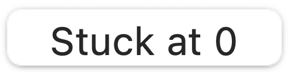
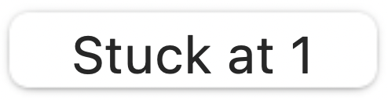
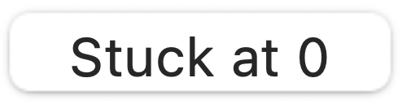
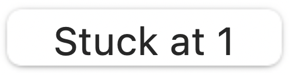

position.
position.Step 2. The values of inputs x, y, z and P can be alternated between ON and OFF
positions by clicking
on the image of the switch.Step 3. Initially, all lines are set to "No fault"
 .
To set a stuck-at fault on any line, press the respective button. The value at the respective lines alternates between ,  and .
.
To set a stuck-at fault on any line, press the respective button. The value at the respective lines alternates between ,  and . Step 4. Click on the "Run" button. The output will be displayed in the table given, along with the corresponding ideal output (displayed in red when there are faults, otherwise in green).